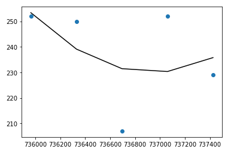
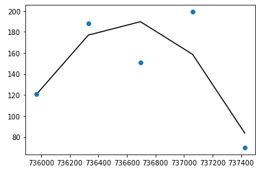

Utilizing three primary datasets, we have been able to track monarch butterfly migrations through tagging and observation reports submitted by volunteers throughout Canada, The United States, and Mexico. Because of the way that this data has been collected, we need to include a human-interest element to our results. For example, in 2010, the number of observations spiked upward very drastically. Around this same time JourneyNorth – one of the groups collecting data created a Facebook page, and it is our speculation that the social media presence along with the broader discussions about climate change going on around this time, were primary factors in the explosion of the dataset. Through this data, and the use of machine learning practices, we would like to achieve the ability to predict the number of monarch butterflies being observed each year – unless, of course, there is a murder in Mexico…
Machine Learning:
We created a system that analyzed butterfly observations within a square grid using user inputs and then used the points of major regions to graph regression lines for butterfly observations over time. We utilized PolynomialFeatures to make a better fit to the regression line, so that it conformed closer to the individual points.
Minneapolis
2016 - 2021

New York City
2016 - 2021

Results Highlight:
These two cities were chosen for analysis because they highlight a few different factors that we think may make a difference in the butterfly population. We chose to look at New York City because of the high-population density over a large area of urban land. Minneapolis has a much smaller population than New York City, but does offer an immense amount of green space and has a reputation for being home to a very ecologically-mindful population of people. Despite having so many more people available to observe butterflies, there are far fewer sightings in New York City than in Minneapolis, which can lead us to believe that densely populated urban areas have a negative impact on the butterfly population.